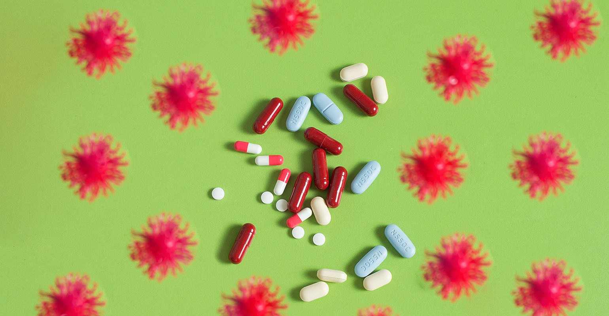

Popular natural products website Mercola.com targeted over COVID claims

One of the internet’s most trafficked websites for alternative and natural health information was the target of a wide-ranging warning letter from FDA’s Center for Food Safety and Applied Nutrition (CFSAN) last month, over specific COVID-19 claims and the potential of vitamins C and D as prevention or treatment of the related disease.
The agency letter cited numerous examples from articles at Mercola.com—and also a tweet from the personal Twitter feed of the site’s owner, best-selling author Dr.Joseph Mercola—in which vitamins C and D are described as emerging treatment options for SARS-CoV-2 infection as well as other respiratory illnesses.
Other FDA-flagged claims on the website describe high-dose vitamin C as an 'antiviral drug' and tout its ability to 'kill' pathogens and viruses.
FDA referenced three specific products sold under the Mercola umbrella—Liposomal Vitamin C, Liposomal Vitamin D3, and Quercetin and Pterostilbene Advanced—and warned that they are misbranded and unapproved new
drugs, in that they are 'intended to mitigate, prevent, treat, diagnose, or cure' COVID-19 respiratory disease, based on the flagged claims.
The warning letter prompted a thorough response from Mercola’s legal team, which disputed the agency’s findings and cited free speech protections, along with current clinical research, in rejecting FDA’s determinations.
'The statements referenced in the warning letter are not only truthful and well-documented, they are unequivocally protected educational speech,' noted a statement from the company, provided by attorney Todd Harrison of Venable LLP.
In their response letter to FDA, Mercola’s lawyers drew the distinction that the challenged statements do not appear on any sales website or other media advertising products that Mercola sells, which he does through a companion website at Mercolamarket.com.
'Instead, these statements appear in articles and on Dr. Mercola’s personal Twitter profile, which set forth Dr. Mercola’s views and opinions, separate and distinct from any website where vitamins or supplements are sold,' their rebuttal reads.
Lawyers contended the warning letter 'only identifies public statements that Dr. Mercola makes in various articles discussing well-referenced scientific publications supporting nutritional and other lifestyle interventions in combatting COVID-19, such as the benefits of vitamin D in improving general health and immune function.'
The Center for Science in the Public Interest (CSPI), a consumer advocacy group and watchdog of several industries including nutritional supplements, hailed news of FDA’s Mercola warning letter.A statement attributed to CSPI President Dr.Peter G. Lurie, a former FDA associate commissioner, said the group was 'very glad' that FDA warned Dr. Mercola.The group wrote a series of letters to agencies with oversight in July 2020 highlighting a number of Mercola’s claims, and similarly testified before a U.S. Senate committee about alleged COVID-19 scams.
According to SimilarWeb, Mercola.com is the No.1 site in terms of global traffic in the Health: Alternative and Natural Medicine category, and had more than 5.7 million site visits in February 2021.
Two of the three webpages at Mercola.com specifically flagged as problematic by FDA were still available on the site at press time (here and here), and continued to contain claims language that the agency said runs crosswise with the law.
In their response letter, Mercola lawyers cited a body of clinical research, especially as it relates to 'strong evidence surrounding vitamin D,' and further quoted Dr.Anthony Fauci, the director of the National Institute of Allergy and Infectious Diseases, who previously suggested taking vitamin C and D supplements because they can lessen 'your susceptibility to infection.'
They also requested a meeting with FDA’s chief counsel, and similarly asked that FDA publicly back what they said has been scientifically proven with regard to vitamin D.
'We urge FDA to follow the science and immediately issue a well-crafted health claim that informs American consumers to work with their physician to determine their vitamin D levels and start a plan of vitamin D supplementation to reduce their risk of developing a severe case of COVID-19,' the company’s statement detailed.
It continued, 'Americans should utilize everything in their arsenal to reduce their risk, including nutritional approaches that are often pennies a day to help stem the tide.'
Posted On: 2021-03-16T00:00:00
Posted By: Duffy Hayes
Content Date: 2021-03-16
Download Date: 2021-04-08
Document ID: L0C049MWN